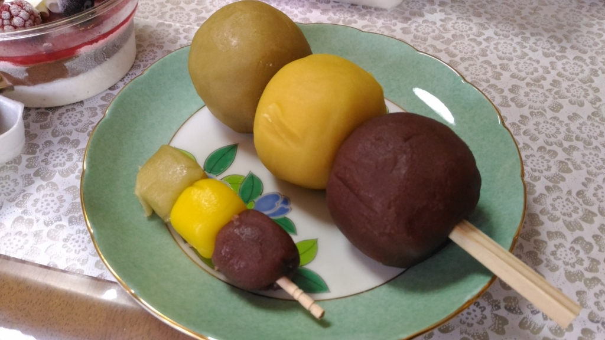

奈良のお土産にデカい坊ちゃん団子をもっていった話
執筆日時：

お盆に関西へ帰るとき、奈良の友人がやたらデカい「坊ちゃん団子」をほしがっていたので、道後温泉（電車で10分～15分ぐらい）に寄って買ってきた。
道後温泉のお土産を売ってる商店街にある「巴堂本舗」というところで売ってる。デカデカとディスプレイされているので、ちょっと注意しながら歩いていたらすぐに見つかるはず。
この「ジャンボ坊ちゃん団子」は、普通の「坊ちゃん団子」の9つ分ある。「ジャンボ坊ちゃん団子」と「坊ちゃん団子」×8個のセットを買ったのだが、付属の「坊ちゃん団子」×8個よりも「ジャンボ坊ちゃん団子」一つの方がデカいわけだ。夏目漱石もびっくりだろうな。
これだけデカいと、さすがに食べてるうちに飽きてしまうのだけど、ネタとしては面白い。
――というわけで、友人に実際に食べてもらった。

美味しいと言ってたので、たぶんおいしいんだろうと思う。
ちなみに、「坊ちゃん団子」の色は 緑、黄、茶色 の三色だけど、原料は 抹茶、卵、小豆 なのかな（？）。チビたちにも小さい団子をあげたのだけど、気に入らない味があるのか一部残していた。僕みたいな味音痴には餡の味ぐらいしかわからないのだけど、色によって微妙な風味の違いがあるのかもね。